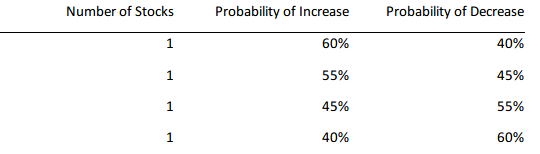

This HIT will involve buying and selling fictitious stocks and will take
approximately 20 minutes. You will be given $10,000 of experiment currency
and your final compensation will depend upon the amount of currency you
have leftover at the end of the experiment.
There will be four stocks – Stock A, Stock B, Stock C and Stock D – and 12
rounds. In the first two rounds, you will just observe the stock prices and not
be able to trade.
In Rounds 3 through 12 you may use your experiment currency to buy and
sell any of the stocks by using the and
buttons at the bottom of your
screen.
Stock Price Development
Stock prices change each round according to the following two processes.First, it will be determined whether a stock will exhibit a price in- or decrease. The probabilities of in- or decreases are different for each share and do not change over time. You do not know which Stock is associated with which of the following probabilities:
Second, the magnitude of the price in- or decrease will be determined. Prices either change by $1, $3, or $5 with the same probability. The magnitude of price changes is completely independent of whether the price is increasing or decreasing.
Trading
On the next screen, you will see a trading interface that will look similar to this:
At the top of the page, the current round will be displayed along with an indication of whether the round is an Observation round or a Trading round. Remember, the first two rounds are observation rounds and you cannot trade during these rounds. Rounds 3 – 12 are Trading rounds.
Your total portfolio will be hold in cash and stocks. No interest will be paid on the amount you hold in cash. The graph entitled “Stock Prices” displays the historic price development of all stocks. Using your mouse cursor, you can investigate each stock’s price in more detail.
Buying Shares
At the bottom of your screen will see a row for each stock. If you click on the “buy” button, you will receive one share of the respective stock and its current price will be deducted from your cash balance. You cannot buy any shares if you do not have the appropriate cash balance –– i.e., borrowing money is not possible in this experiment.
Selling Shares
If you click on “sell,” you will sell one share of stock at the current price and the proceedings will be added to your cash balance. If the current price is above (below) the weighted average purchase price, the sale will be counted as a realized gain (loss).You cannot sell shares you do not own — i.e., short-selling is not allowed in this experiment.
When you are content with all your trading decisions for the current period, you can click on the “Next period” button to receive new prices. In period 14, the button’s label will change to “Continue.” If you click on it you will be redirected to a short questionnaire.
Compensation
Your compensation will depend on the quality of decisions you make during the experiment. You will initially be endowed with $10,000. At the end of the experiment, your payoff will amount to $4.50 plus 0.25% of your increase in total assets. I.e., if your total final assets amount to $11,000, you will receive a flat fee of $4.50 plus $2.50 ($11, 000 − $10, 000 = $1, 000 ∗ 0.25% = $2.50).
Hence, you would receive $7 in total.
Consent to Participate in Research
By answering the following questions, you are participating in a study on the cognitive processes of investors. By participating you are confirming that you are over 18 years of age. If you have questions about this research, or if you would like to receive a report of this research when it is completed please contact Joseph Engelberg at jengelberg@ucsd.edu. Your participation in this research is voluntary. You may decline to answer any or all of the following questions. You may decline further participation, at any time, without adverse consequences. Your anonymity is assured; the researchers who have requested your participation will not receive any personal information about you. By continuing, you are confirming that you understand these instructions and conditions of participation.